1
Open the Vaultline dashboard
- Go to dashboard.vaultline.co.
- Click Signup in the top-right corner.
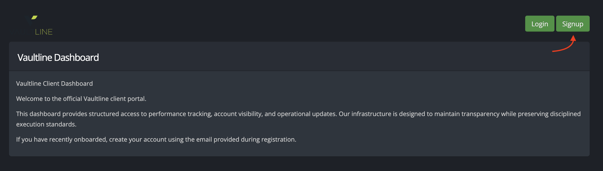
2
Register your account
- Enter Full Name, Email Address, Password, and Password confirmation.
- Click Sign up.
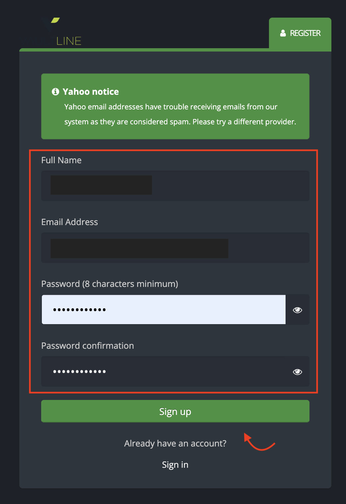
3
Check your email for verification
- Open your inbox for the same email used in Step 2.
- If no email arrives, click Resend verification email.
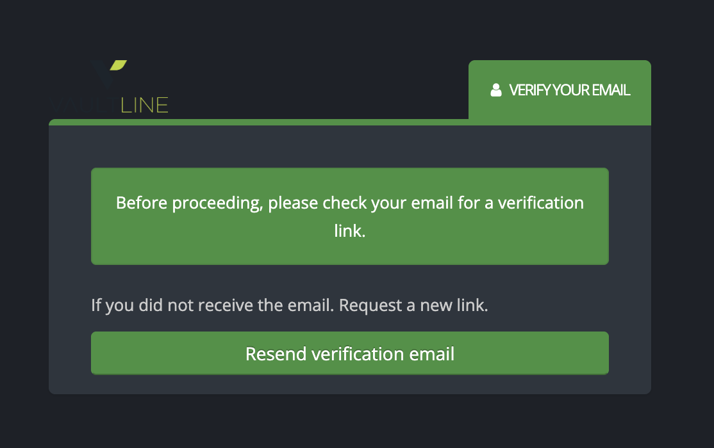
4
Activate your account from email
- Open the Vaultline verification email.
- Click Verify Account.
Mandatory checkpoint: After Step 4, client must confirm with their account specialist that backend approval and rollover are completed before continuing.
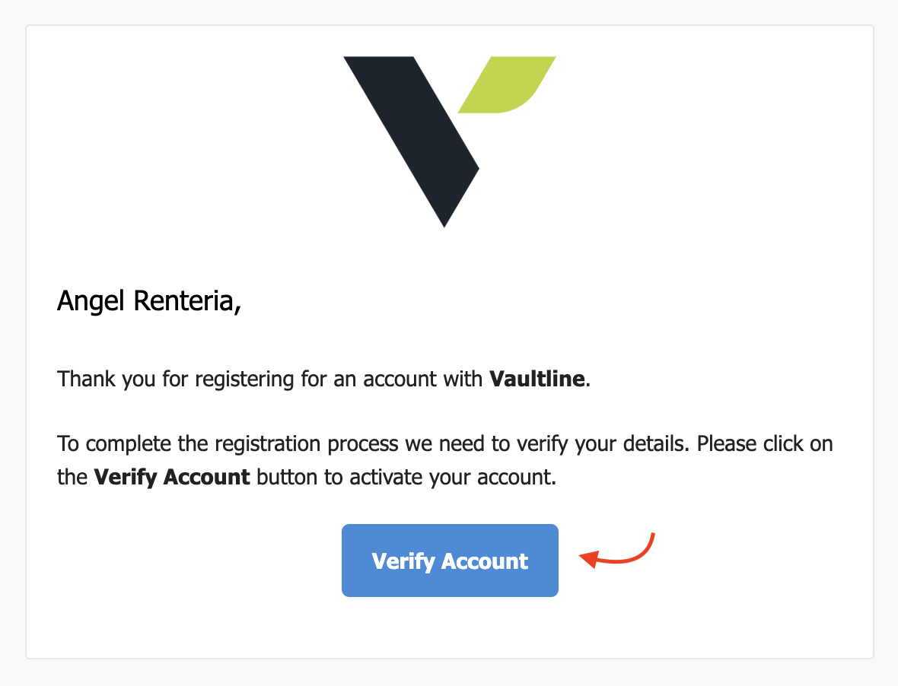
5
Open Configurator Accounts
- In the left menu, open Configurator.
- Click Accounts.
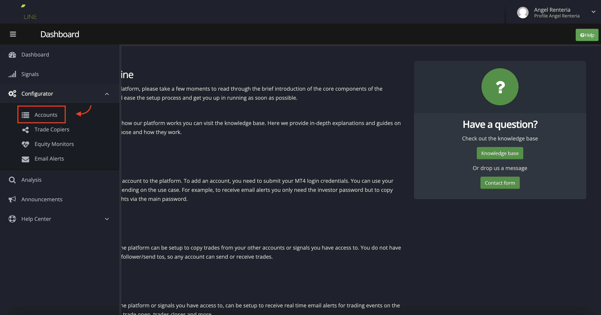
6
Start adding a trading account
- On the Accounts page, click + Add Account.
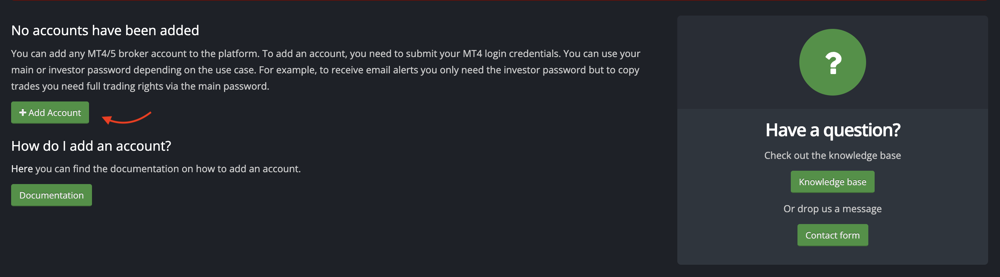
7
Enter MT4 or MT5 credentials
- Select platform (MetaTrader 4 or MetaTrader 5).
- Fill in account details (name, account number, password, broker, server).
- Click Add Account.
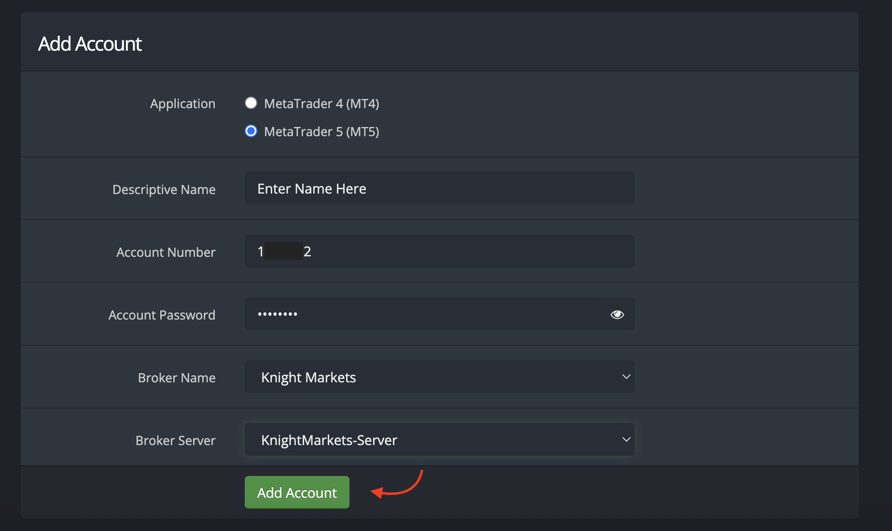
8
Confirm account is added
- Verify the new account appears in the accounts table.
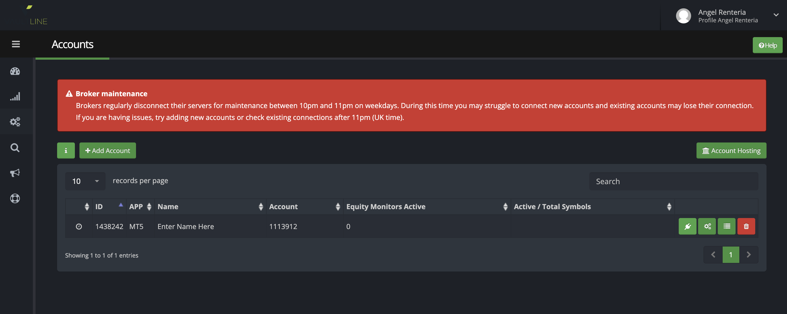
9
Open Trade Copiers
- In the left menu under Configurator, click Trade Copiers.
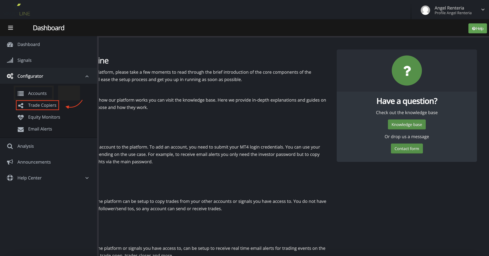
10
Create a copier
- On the Trade Copiers page, click Create Copier.
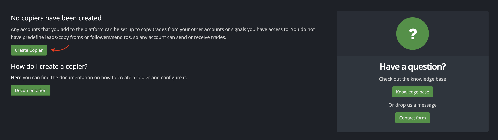
11
Configure copier settings
- Set Copy from to the Strata Ecosystem account that matches the client’s broker (see table below).
- Set Send to as the client’s own trading account (added in Step 7).
- Set risk settings and options as shown.
- Tick I have read the T&C’s, then click Create Copier.
| Client’s broker | Select in “Copy from” |
|---|---|
| OX | Strata Ecosystem Ox (1533103) · MT5 |
| GNT | Strata Ecosystem GNT Titanium 2 (1531263) · MT5 |
| Knight Markets | Strata Ecosystem (as shown in the screenshot below) |
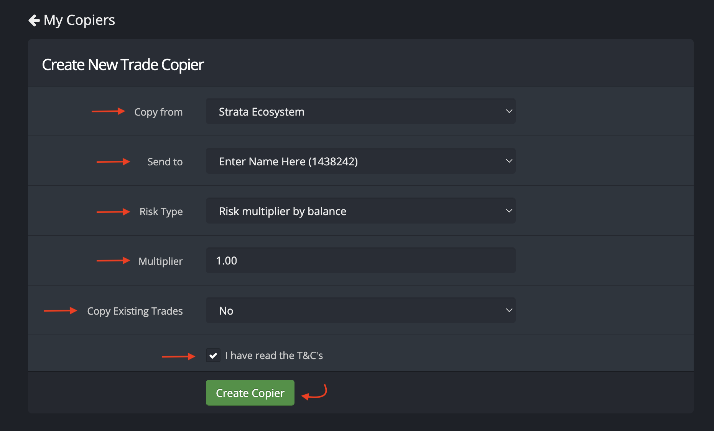
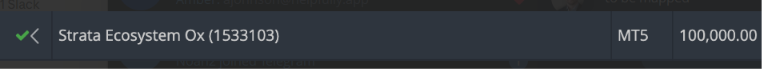
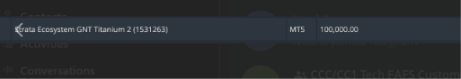
12
Open copier settings
- Find the created copier in the list.
- Click the settings/gear button on that row.
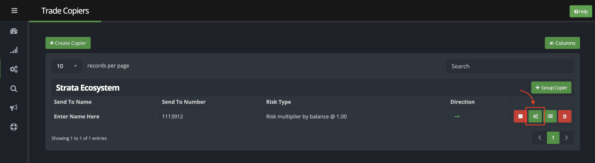
13
Enable copier mode
- In General, set Copier Mode to ON.
- Click Update.
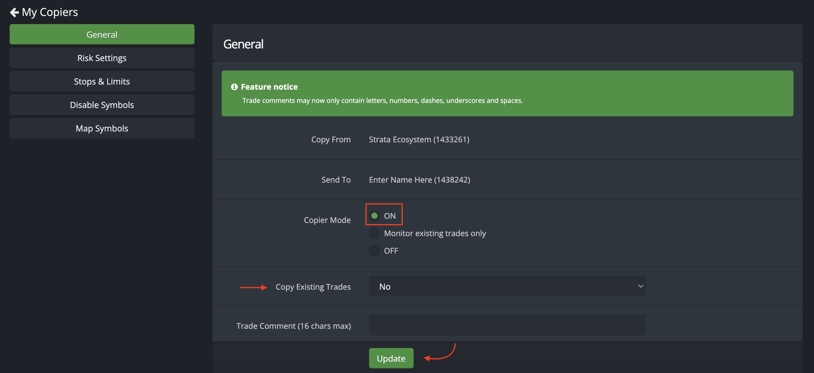
Check before finishing — does this broker need symbol mapping?
- Confirm with the account specialist whether the client’s broker (OX, GNT, Knight Markets or other) needs symbol mapping.
- If it does, the account specialist will handle the mapping setup with the client. If not, go straight to Step 14.
14
Finish and return to dashboard
- Click Dashboard in the left menu to return to the main page.
- On the Dashboard, you should see Strata’s account and your trading account connected. Onboarding is complete.